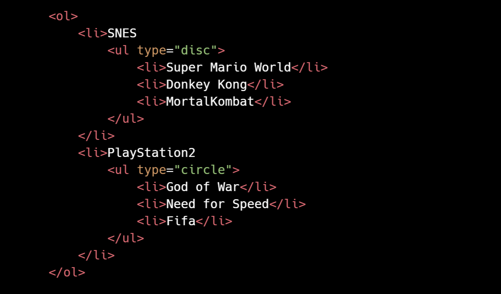
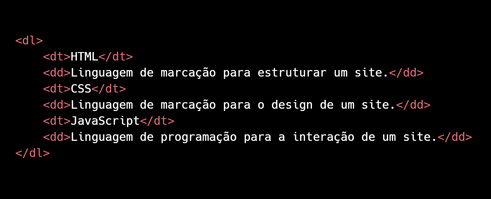

As listas ordenadas permite que você apresente informações de forma clara e organizada. Elas são especialmente úteis para apresentar informações em uma sequência lógica, quando a ordem dos itens é significativa, como em listas de tarefas, etapas de um processo ou classificações. Elas ajudam a melhorar a legibilidade do conteúdo e facilitam a compreensão das informações apresentadas.
Para criar uma lista ordenada, utiliza-se a tag <ol> (ordered list) e cada item da lista é definido com a tag <li> (list item). Veja o exemplo abaixo:
Você pode personalizar o estilo da lista ordenada usando o atributo type na tag <ol>, que permite definir o tipo de numeração (por exemplo, type="1" para números, type="A" para letras maiúsculas, type="a" para letras minúsculas, type="i" para números romanos minúsculo e type="I" para números romanos minúsculos). Exemplo:
O resultado será uma lista ordenada com letras maiúsculas:
Item A
Item B
Item C
O atributo start também pode ser usado na tag <ol> para definir o número inicial da lista. Por exemplo, se você quiser que a lista comece com o número 5, você pode fazer assim:
O resultado será uma lista ordenada que começa com o número 5:
Item 5
Item 6
Item 7
Lista não Ordenada
As listas não ordenadas são usadas para apresentar itens que não precisam ser numerados. As listas não ordenadas são uma maneira eficaz de apresentar informações de forma clara e organizada, permitindo que você destaque os itens sem atribuir uma ordem específica a eles. Elas ajudam a melhorar a experiência do usuário, tornando o conteúdo mais fácil de ler e entender.
A lista não ordenada é uma lista com marcadores, onde os itens não têm uma sequência específica. Para criar uma lista não ordenada, utiliza-se a tag <ul> (unordered list) e cada item da lista é definido com a tag <li> (list item). Veja o exemplo abaixo:
Você pode personalizar o estilo da lista não ordenada usando o atributo type na tag <ul>, que permite definir o tipo de marcador (por exemplo, type="disc" para círculos, type="circle" para círculos vazios e type="square" para quadrados). Exemplo:
O resultado será uma lista com marcadores quadrados:
Item 1
Item 2
Item 3
Lista dentro de lista
As listas dentro de listas são úteis para organizar informações de forma mais detalhada e hierárquica, permitindo que você apresente subcategorias ou itens relacionados de maneira clara e estruturada.
Além disso, você pode combinar listas ordenadas e não ordenadas dentro de uma mesma estrutura. Por exemplo, você pode ter uma lista ordenada com itens que contêm sublistas não ordenadas. Um bom exemplo de utilidade neste contexto são os índices. Para fazer uma lista dentro da outra, basta aninhar as tags <ol> ou <ul> dentro de uma tag <li>, como o exemplo abaixo:

O resultado será uma lista ordenada com uma sublista não ordenada:
SNES
Super Mario World
Donkey Kong
MortalKombat
PlayStation2
God of War
Need for Speed
Fifa
Lista de Definição
As listas de definição são usadas para apresentar termos e suas definições de forma clara e organizada. Elas são especialmente úteis em glossários, dicionários ou quando você precisa explicar termos técnicos, especializados ou quando você precisa fornecer definições detalhadas para termos específicos. As listas de definição ajudam a melhorar a legibilidade do conteúdo e facilitam a compreensão das informações apresentadas.
As listas de definição são compostas por três tags principais: <dl> (definition list), <dt> (definition term) e <dd> (definition description). A tag <dl> é usada para definir a lista de definição, enquanto a tag <dt> é usada para definir o termo e a tag <dd> é usada para fornecer a descrição ou definição do termo. Veja o exemplo abaixo:

O resultado será uma lista de definição:
HTML
Linguagem de marcação para estruturar um site.
CSS
Linguagem de marcação para o design de um site.
JavaScript
Linguagem de programação para a interação de um site.
Em resumo, as listas são uma ferramenta poderosa para organizar informações em HTML. Elas podem ser usadas para apresentar itens em uma sequência específica (listas ordenadas), com marcadores (listas não ordenadas) ou para definir termos e suas descrições (listas de definição). Com o uso adequado das tags <ol>, <ul>, <li>, <dl>, <dt> e <dd>, você pode criar listas claras e estruturadas que melhoram a legibilidade do conteúdo e facilitam a compreensão das informações apresentadas.